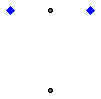
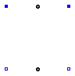
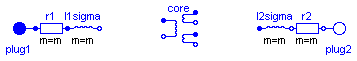
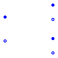

| Name | Description |
|---|---|
| Partial airgap model | |
| Airgap in stator-fixed coordinate system | |
| Airgap in rotor-fixed coordinate system | |
| Squirrel Cage | |
| Squirrel Cage | |
| Electrical excitation | |
| Permanent magnet excitation | |
| Partial airgap model of a DC machine | |
| Linear airgap model of a DC machine | |
| Partial model of threephase transformer | |
| PartialCore | Partial model of transformer core with 3 windings |
| IdealCore | Ideal transformer with 3 windings |
 Modelica.Electrical.Machines.BasicMachines.Components.PartialAirGap
Modelica.Electrical.Machines.BasicMachines.Components.PartialAirGap
| Type | Name | Default | Description |
|---|---|---|---|
| Integer | m | 3 | number of phases |
| Integer | p | number of pole pairs |
| Type | Name | Description |
|---|---|---|
| Flange_a | flange | |
| Flange_a | support | support at which the reaction torque is acting |
| SpacePhasor | spacePhasor_s | |
| SpacePhasor | spacePhasor_r |
partial model PartialAirGap "Partial airgap model"
parameter Integer m=3 "number of phases";
parameter Integer p(min=1) "number of pole pairs";
output Modelica.SIunits.Torque tauElectrical;
Modelica.SIunits.Angle gamma "Rotor displacement angle";
Modelica.SIunits.Current i_ss[2]
"Stator current space phasor with respect to the stator fixed frame";
Modelica.SIunits.Current i_sr[2]
"Stator current space phasor with respect to the rotor fixed frame";
Modelica.SIunits.Current i_rs[2]
"Rotor current space phasor with respect to the stator fixed frame";
Modelica.SIunits.Current i_rr[2]
"Rotor current space phasor with respect to the rotor fixed frame";
Modelica.SIunits.MagneticFlux psi_ms[2]
"Magnetizing flux phasor with respect to the stator fixed frame";
Modelica.SIunits.MagneticFlux psi_mr[2]
"Magnetizing flux phasor with respect to the rotor fixed frame";
Real RotationMatrix[2,2] "matrix of rotation from rotor to stator";
public
Modelica.Mechanics.Rotational.Interfaces.Flange_a flange;
Modelica.Mechanics.Rotational.Interfaces.Flange_a support
"support at which the reaction torque is acting";
Machines.Interfaces.SpacePhasor spacePhasor_s;
Machines.Interfaces.SpacePhasor spacePhasor_r;
equation
// mechanical angle of the rotor of an equivalent 2-pole machine
gamma=p*(flange.phi-support.phi);
RotationMatrix={{+cos(gamma),-sin(gamma)},{+sin(gamma),+cos(gamma)}};
i_ss = spacePhasor_s.i_;
i_ss = RotationMatrix*i_sr;
i_rr = spacePhasor_r.i_;
i_rs = RotationMatrix*i_rr;
// Stator voltage induction
spacePhasor_s.v_ = der(psi_ms);
// Rotor voltage induction
spacePhasor_r.v_ = der(psi_mr);
// Electromechanical torque (cross product of current and flux space phasor)
tauElectrical = m/2*p*(spacePhasor_s.i_[2]*psi_ms[1] - spacePhasor_s.i_[1]*psi_ms[2]);
flange.tau = -tauElectrical;
support.tau = tauElectrical;
end PartialAirGap;
| Type | Name | Default | Description |
|---|---|---|---|
| Inductance | Lm | main field inductance [H] | |
| Integer | m | 3 | number of phases |
| Integer | p | number of pole pairs |
| Type | Name | Description |
|---|---|---|
| Flange_a | flange | |
| Flange_a | support | support at which the reaction torque is acting |
| SpacePhasor | spacePhasor_s | |
| SpacePhasor | spacePhasor_r |
model AirGapS "Airgap in stator-fixed coordinate system"
parameter Modelica.SIunits.Inductance Lm "main field inductance";
extends PartialAirGap;
Modelica.SIunits.Current i_ms[2]
"Magnetizing current space phasor with respect to the stator fixed frame";
protected
parameter Modelica.SIunits.Inductance L[2,2]={{Lm,0},{0,Lm}}
"inductance matrix";
equation
// Magnetizing current with respect to the stator reference frame
i_ms = i_ss + i_rs;
// Magnetizing flux linkage with respect to the stator reference frame
psi_ms = L*i_ms;
// Magnetizing flux linkage with respect to the rotor reference frame
psi_mr = transpose(RotationMatrix)*psi_ms;
end AirGapS;
| Type | Name | Default | Description |
|---|---|---|---|
| Inductance | Lmd | main field inductance d-axis [H] | |
| Inductance | Lmq | main field inductance q-axis [H] | |
| Integer | m | 3 | number of phases |
| Integer | p | number of pole pairs |
| Type | Name | Description |
|---|---|---|
| Flange_a | flange | |
| Flange_a | support | support at which the reaction torque is acting |
| SpacePhasor | spacePhasor_s | |
| SpacePhasor | spacePhasor_r |
model AirGapR "Airgap in rotor-fixed coordinate system"
parameter Modelica.SIunits.Inductance Lmd "main field inductance d-axis";
parameter Modelica.SIunits.Inductance Lmq "main field inductance q-axis";
extends PartialAirGap;
Modelica.SIunits.Current i_mr[2]
"Magnetizing current space phasor with respect to the rotor fixed frame";
protected
parameter Modelica.SIunits.Inductance L[2,2]={{Lmd,0},{0,Lmq}}
"inductance matrix";
equation
// Magnetizing current with respect to the rotor reference frame
i_mr = i_sr + i_rr;
// Main flux linkage with respect to the stator reference frame
psi_mr = L*i_mr;
// Main flux linkage with respect to the stator reference frame
psi_ms = RotationMatrix*psi_mr;
// Stator voltage induction
end AirGapR;
 Modelica.Electrical.Machines.BasicMachines.Components.SquirrelCage
Modelica.Electrical.Machines.BasicMachines.Components.SquirrelCage

| Type | Name | Default | Description |
|---|---|---|---|
| Inductance | Lrsigma | rotor stray inductance per phase translated to stator [H] | |
| Resistance | Rr | warm rotor resistance per phase translated to stator [Ohm] |
| Type | Name | Description |
|---|---|---|
| SpacePhasor | spacePhasor_r |
model SquirrelCage "Squirrel Cage"
parameter Modelica.SIunits.Inductance Lrsigma
"rotor stray inductance per phase translated to stator";
parameter Modelica.SIunits.Resistance Rr
"warm rotor resistance per phase translated to stator";
Machines.Interfaces.SpacePhasor spacePhasor_r;
equation
spacePhasor_r.v_ = Rr * spacePhasor_r.i_ + Lrsigma * der(spacePhasor_r.i_);
end SquirrelCage;
 Modelica.Electrical.Machines.BasicMachines.Components.DamperCage
Modelica.Electrical.Machines.BasicMachines.Components.DamperCage
| Type | Name | Default | Description |
|---|---|---|---|
| Inductance | Lrsigmad | stray inductance in d-axis per phase translated to stator [H] | |
| Inductance | Lrsigmaq | stray inductance in q-axis per phase translated to stator [H] | |
| Resistance | Rrd | warm resistance in d-axis per phase translated to stator [Ohm] | |
| Resistance | Rrq | warm resistance in q-axis per phase translated to stator [Ohm] |
| Type | Name | Description |
|---|---|---|
| SpacePhasor | spacePhasor_r |
model DamperCage "Squirrel Cage"
parameter Modelica.SIunits.Inductance Lrsigmad
"stray inductance in d-axis per phase translated to stator";
parameter Modelica.SIunits.Inductance Lrsigmaq
"stray inductance in q-axis per phase translated to stator";
parameter Modelica.SIunits.Resistance Rrd
"warm resistance in d-axis per phase translated to stator";
parameter Modelica.SIunits.Resistance Rrq
"warm resistance in q-axis per phase translated to stator";
Machines.Interfaces.SpacePhasor spacePhasor_r;
equation
spacePhasor_r.v_[1] = Rrd * spacePhasor_r.i_[1] + Lrsigmad * der(spacePhasor_r.i_[1]);
spacePhasor_r.v_[2] = Rrq * spacePhasor_r.i_[2] + Lrsigmaq * der(spacePhasor_r.i_[2]);
end DamperCage;
 Modelica.Electrical.Machines.BasicMachines.Components.ElectricalExcitation
Modelica.Electrical.Machines.BasicMachines.Components.ElectricalExcitation

| Type | Name | Default | Description |
|---|---|---|---|
| Real | turnsRatio | stator current / excitation current |
| Type | Name | Description |
|---|---|---|
| SpacePhasor | spacePhasor_r | |
| PositivePin | pin_ep | |
| NegativePin | pin_en |
model ElectricalExcitation "Electrical excitation"
parameter Real turnsRatio(start=1) "stator current / excitation current";
Modelica.SIunits.Current ie "excitation current";
Modelica.SIunits.Voltage ve "excitation voltage";
Machines.Interfaces.SpacePhasor spacePhasor_r;
Modelica.Electrical.Analog.Interfaces.PositivePin pin_ep;
Modelica.Electrical.Analog.Interfaces.NegativePin pin_en;
equation
pin_ep.i + pin_en.i = 0;
ie = +pin_ep.i;
ve = pin_ep.v - pin_en.v;
spacePhasor_r.i_ = {-ie*turnsRatio,0};
ve = spacePhasor_r.v_[1]*turnsRatio*3/2;
end ElectricalExcitation;
 Modelica.Electrical.Machines.BasicMachines.Components.PermanentMagnet
Modelica.Electrical.Machines.BasicMachines.Components.PermanentMagnet

| Type | Name | Default | Description |
|---|---|---|---|
| Current | Ie | equivalent excitation current [A] |
| Type | Name | Description |
|---|---|---|
| SpacePhasor | spacePhasor_r |
model PermanentMagnet "Permanent magnet excitation"
parameter Modelica.SIunits.Current Ie "equivalent excitation current";
Machines.Interfaces.SpacePhasor spacePhasor_r;
equation
spacePhasor_r.i_ = {-Ie,0};
end PermanentMagnet;
 Modelica.Electrical.Machines.BasicMachines.Components.PartialAirGapDC
Modelica.Electrical.Machines.BasicMachines.Components.PartialAirGapDC
| Type | Name | Default | Description |
|---|---|---|---|
| Real | turnsRatio | ratio of armature turns over number of turns of the excitation winding |
| Type | Name | Description |
|---|---|---|
| Flange_a | shaft | |
| Flange_a | support | support at which the reaction torque is acting |
| PositivePin | pin_ap | |
| PositivePin | pin_ep | |
| NegativePin | pin_an | |
| NegativePin | pin_en |
partial model PartialAirGapDC "Partial airgap model of a DC machine"
parameter Real turnsRatio
"ratio of armature turns over number of turns of the excitation winding";
Modelica.SIunits.AngularVelocity w "Angluar velocity";
Modelica.SIunits.Voltage vei
"Voltage drop across field excitation inductance";
Modelica.SIunits.Current ie "Excitation current";
Modelica.SIunits.MagneticFlux psi_e "Excitation flux";
Modelica.SIunits.Voltage vai "Induced armature voltage";
Modelica.SIunits.Current ia "Armature current";
output Modelica.SIunits.Torque tauElectrical;
Modelica.Mechanics.Rotational.Interfaces.Flange_a shaft;
Modelica.Mechanics.Rotational.Interfaces.Flange_a support
"support at which the reaction torque is acting";
Modelica.Electrical.Analog.Interfaces.PositivePin pin_ap;
Modelica.Electrical.Analog.Interfaces.PositivePin pin_ep;
Modelica.Electrical.Analog.Interfaces.NegativePin pin_an;
Modelica.Electrical.Analog.Interfaces.NegativePin pin_en;
equation
// armature pins
vai = pin_ap.v - pin_an.v;
ia = + pin_ap.i;
ia = - pin_an.i;
// excitation pins
vei = pin_ep.v - pin_en.v;
ie = + pin_ep.i;
ie = - pin_en.i;
// induced voltage across field excitation inductance
vei = der(psi_e);
// mechanical speed
w = der(shaft.phi)-der(support.phi);
// induced armature voltage
vai = turnsRatio * psi_e * w;
// electrical torque (ia is perpendicular to flux)
tauElectrical = turnsRatio * psi_e * ia;
shaft.tau = -tauElectrical;
support.tau = tauElectrical;
end PartialAirGapDC;
Modelica.Electrical.Machines.BasicMachines.Components.AirGapDC
| Type | Name | Default | Description |
|---|---|---|---|
| Real | turnsRatio | ratio of armature turns over number of turns of the excitation winding | |
| Inductance | Le | excitation inductance [H] |
| Type | Name | Description |
|---|---|---|
| Flange_a | shaft | |
| Flange_a | support | support at which the reaction torque is acting |
| PositivePin | pin_ap | |
| PositivePin | pin_ep | |
| NegativePin | pin_an | |
| NegativePin | pin_en |
model AirGapDC "Linear airgap model of a DC machine" extends PartialAirGapDC; parameter Modelica.SIunits.Inductance Le "excitation inductance"; equation // excitation flux: linearly dependent on excitation current psi_e = Le * ie; end AirGapDC;
 Modelica.Electrical.Machines.BasicMachines.Components.BasicTransformer
Modelica.Electrical.Machines.BasicMachines.Components.BasicTransformer
| Type | Name | Default | Description |
|---|---|---|---|
| Real | n | primary voltage (line-to-line) / secondary voltage (line-to-line) | |
| Resistance | R1 | warm primary resistance per phase [Ohm] | |
| Inductance | L1sigma | primary stray inductance per phase [H] | |
| Resistance | R2 | warm secondary resistance per phase [Ohm] | |
| Inductance | L2sigma | secondary stray inductance per phase [H] |
| Type | Name | Description |
|---|---|---|
| PositivePlug | plug1 | |
| NegativePlug | plug2 |
partial model BasicTransformer
"Partial model of threephase transformer"
constant Integer m(min=1) = 3 "Number of phases";
constant String VectorGroup="Yy00";
parameter Real n(start=1)
"primary voltage (line-to-line) / secondary voltage (line-to-line)";
parameter Modelica.SIunits.Resistance R1(start=5E-3/(if C1=="D" then 1 else 3))
"warm primary resistance per phase";
parameter Modelica.SIunits.Inductance L1sigma(start=78E-6/(if C1=="D" then 1 else 3))
"primary stray inductance per phase";
parameter Modelica.SIunits.Resistance R2(start=5E-3/(if C2=="d" then 1 else 3))
"warm secondary resistance per phase";
parameter Modelica.SIunits.Inductance L2sigma(start=78E-6/(if C2=="d" then 1 else 3))
"secondary stray inductance per phase";
output Modelica.SIunits.Voltage v1[m]=plug1.pin.v "Primary voltage";
output Modelica.SIunits.Current i1[m]=plug1.pin.i "Primary current";
output Modelica.SIunits.Voltage v2[m]=plug2.pin.v "Secondary voltage";
output Modelica.SIunits.Current i2[m]=plug2.pin.i "Secondary current";
protected
constant String C1 = Modelica.Utilities.Strings.substring(VectorGroup,1,1);
constant String C2 = Modelica.Utilities.Strings.substring(VectorGroup,2,2);
parameter Real ni=n*(if C2=="z" then sqrt(3) else 2)*(if C2=="d" then 1 else sqrt(3))/(if C1=="D" then 1 else sqrt(3));
public
Modelica.Electrical.MultiPhase.Interfaces.PositivePlug plug1(final m=m);
Modelica.Electrical.MultiPhase.Interfaces.NegativePlug plug2(final m=m);
Modelica.Electrical.MultiPhase.Basic.Resistor r1(final m=m, final R=fill(R1,m));
Modelica.Electrical.MultiPhase.Basic.Inductor l1sigma(final m=m, final L=fill(L1sigma, m));
Modelica.Electrical.MultiPhase.Basic.Resistor r2(final m=m, final R=fill(R2,m));
Modelica.Electrical.MultiPhase.Basic.Inductor l2sigma(final m=m, final L=fill(L2sigma, m));
IdealCore core(
final m=m,
final n12=ni,
final n13=ni);
equation
connect(r1.plug_n,l1sigma. plug_p);
connect(l2sigma.plug_n,r2. plug_p);
connect(plug1, r1.plug_p);
connect(r2.plug_n, plug2);
end BasicTransformer;

| Type | Name | Default | Description |
|---|---|---|---|
| Integer | m | 3 | number of phases |
| Real | n12 | turns ratio 1:2 | |
| Real | n13 | turns ratio 1:3 |
| Type | Name | Description |
|---|---|---|
| PositivePlug | plug_p1 | |
| NegativePlug | plug_n1 | |
| PositivePlug | plug_p2 | |
| NegativePlug | plug_n2 | |
| PositivePlug | plug_p3 | |
| NegativePlug | plug_n3 |
partial model PartialCore
"Partial model of transformer core with 3 windings"
parameter Integer m(final min=1) = 3 "number of phases";
parameter Real n12(start=1) "turns ratio 1:2";
parameter Real n13(start=1) "turns ratio 1:3";
Modelica.SIunits.Voltage v1[m] = plug_p1.pin.v - plug_n1.pin.v;
Modelica.SIunits.Current i1[m] = plug_p1.pin.i;
Modelica.SIunits.Voltage v2[m] = plug_p2.pin.v - plug_n2.pin.v;
Modelica.SIunits.Current i2[m] = plug_p2.pin.i;
Modelica.SIunits.Voltage v3[m] = plug_p3.pin.v - plug_n3.pin.v;
Modelica.SIunits.Current i3[m] = plug_p3.pin.i;
Modelica.SIunits.Current im[m] = i1 + i2/n12 + i3/n13 "Magnetizing current";
Modelica.Electrical.MultiPhase.Interfaces.PositivePlug plug_p1(final m=
m);
Modelica.Electrical.MultiPhase.Interfaces.NegativePlug plug_n1(final m=
m);
Modelica.Electrical.MultiPhase.Interfaces.PositivePlug plug_p2(final m=
m);
Modelica.Electrical.MultiPhase.Interfaces.NegativePlug plug_n2(final m=
m);
Modelica.Electrical.MultiPhase.Interfaces.PositivePlug plug_p3(final m=
m);
Modelica.Electrical.MultiPhase.Interfaces.NegativePlug plug_n3(final m=
m);
equation
plug_p1.pin.i + plug_n1.pin.i = zeros(m);
plug_p2.pin.i + plug_n2.pin.i = zeros(m);
plug_p3.pin.i + plug_n3.pin.i = zeros(m);
end PartialCore;
| Type | Name | Default | Description |
|---|---|---|---|
| Integer | m | 3 | number of phases |
| Real | n12 | turns ratio 1:2 | |
| Real | n13 | turns ratio 1:3 |
| Type | Name | Description |
|---|---|---|
| PositivePlug | plug_p1 | |
| NegativePlug | plug_n1 | |
| PositivePlug | plug_p2 | |
| NegativePlug | plug_n2 | |
| PositivePlug | plug_p3 | |
| NegativePlug | plug_n3 |
model IdealCore "Ideal transformer with 3 windings" extends PartialCore; equation im = zeros(m); v1 = n12*v2; v1 = n13*v3; end IdealCore;